便利になったけど、使い方の解説とかあったほうがいいなと思ったので書いたやつ
概要
v1.9.1ではインベントリで設定した項目がコマをマウスオーバーしたときに
ふわぁ……とコマ画像と共にサムネイル表示されるようになりました
それと、インベントリで項目設定をすることでどどんとふでいうイニシアティブ表みたいに使うことができます
ここでは、その設定方法を解説します。
操作手順
メニューからここを押すとインベントリのウィンドウが開きます
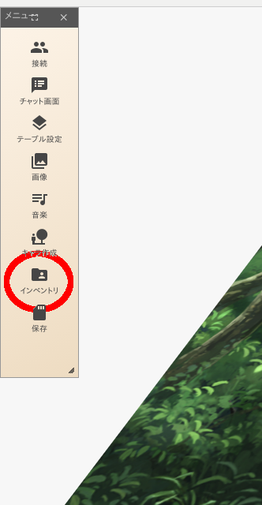
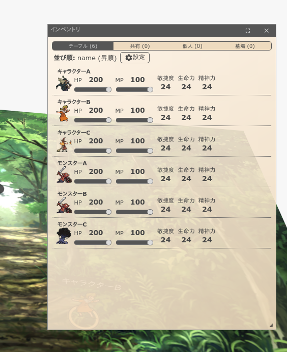
- キャラコマを右クリックして詳細を開きます
- コマ詳細から編集切り替えをクリックします
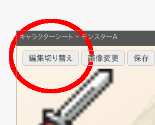
- 「(+)」のボタンを押して項目を追加します
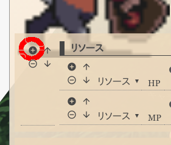
- 新しく空の項目ができるので、そこに行動力というリソースを設定しましょう
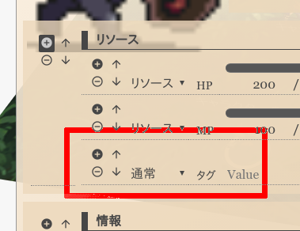
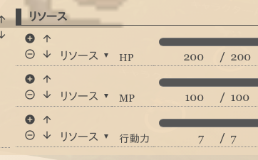
- 再び、インベントリのウィンドウを開き（開いている場合はそのウィンドウを選択し）「⚙設定」をクリックします
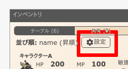
- すると、画像のような状態になるので。そこに行動力という項目を追加しましょう
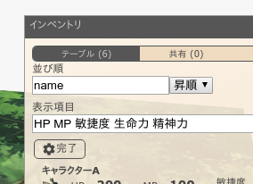
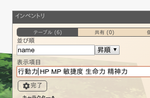
- 次に、「name 昇順▼」となっている箇所を「行動力 降順▼」にしましょう
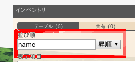
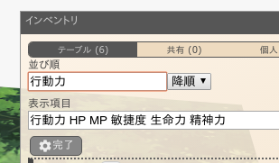
- インベントリの設定を終えたら「⚙完了」ボタンを押すのを忘れずに
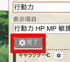
- そうすると、インベントリのウィンドウがこのように変化します（画像は変更前と変更後）
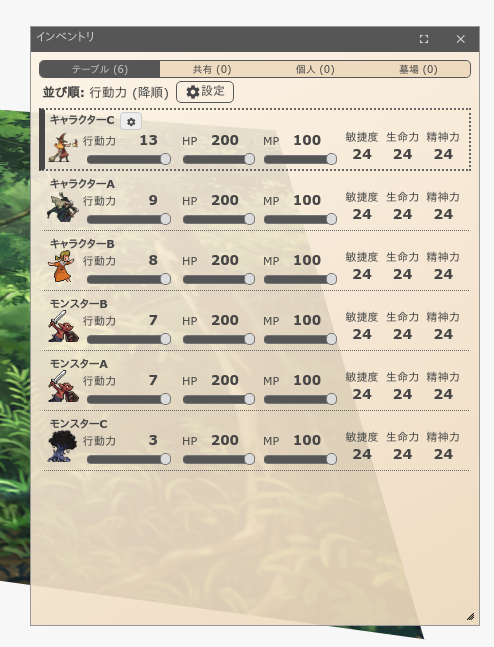
- そして、このインベントリ設定はコマをマウスオーバーしたときに出てくるサムネイルにも反映されます（画像は変更前と変更後）
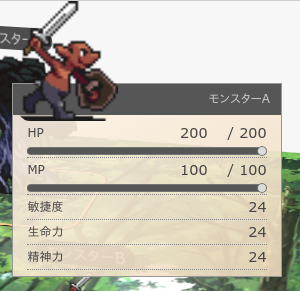
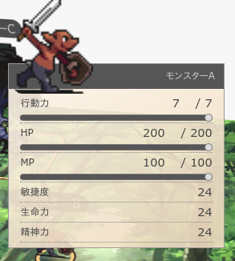
- コマの数値はインベントリのウィンドウからも、コマ個別のウィンドウからも操作できます
- また、コマの数値が変更された場合はリアルタイムにインベントリにも反映されます
以上です、おつかれさまでした！！